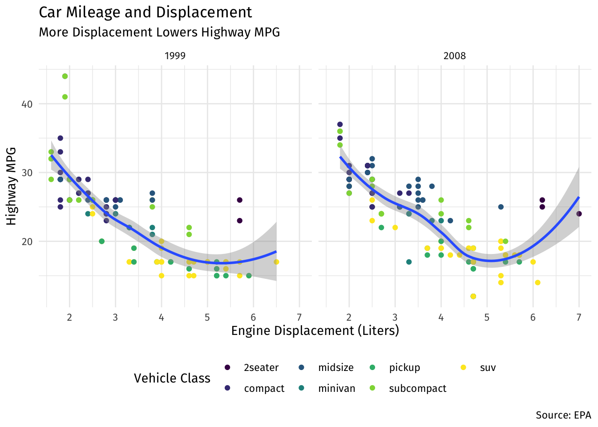

Code
gapminder1<-gapminder[gapminder$country=="United States", c("year", "gdpPercap", "pop")]
gapminder1$gdp<-gapminder1$gdpPercap*gapminder1$popOctober 18, 2019
This is an opinionated post based on how I teach my undergraduate econometrics course. It will not be for everybody. The title applies mostly to anyone who wants to do data science or econometrics with R. This is the second time I have taught this course with R, and I have changed it around in many ways that I think optimize the process for students. In this post, I’ll cover just two major changes:
The last time I taught this course (and my first exploration with R), I did neither. Part of this was because I had just learned base R a few months before the course began, and was still learning and discovering new commands as the semester went on. I waited several weeks to introduce R, starting instead with econometric theory and review, and then interspersing bits of R as it became relevant for each task (running regressions, making plots, changing variables, and various different models). While it was fine for most students, there are some changes that will make students’ lives easier.
I am still partway through the course, so it remains to be seen if students R skills are more developed by the end of the course (as they wrap up their projects) because they learned a lot of R first, versus in bite-sized chunks spread out over the semester.
tidyverse and Opinionated RThe tidyverse is an opinionated collection of R packages designed for data science. All packages share an underlying design philosophy, grammar, and data structures. - tidyverse.org
One of the common refrains about what is awesome/terrible about R is that there are multiple ways to accomplish the same task. Here is where the opinions begin, so I’ll give mine: Code written with tidyverse packages simply looks a lot better and is far easier for humans to read, particularly if you follow the style guidelines, as I do.
For example, the following code takes data from the excellent gapminder dataset and package, and subsets the data to:
year, gdpPercap and pop variablesGDP by multiplying gdpPercap and popThis is doable in base R, and often requires saving the output as a new object for later use.
Below, the same procedure is done with dplyr and using the pipe %>% from magrittr (both part of the tidyverse).
# A tibble: 12 × 4
year gdpPercap pop GDP
<int> <dbl> <int> <dbl>
1 1952 13990. 157553000 2.20e12
2 1957 14847. 171984000 2.55e12
3 1962 16173. 186538000 3.02e12
4 1967 19530. 198712000 3.88e12
5 1972 21806. 209896000 4.58e12
6 1977 24073. 220239000 5.30e12
7 1982 25010. 232187835 5.81e12
8 1987 29884. 242803533 7.26e12
9 1992 32004. 256894189 8.22e12
10 1997 35767. 272911760 9.76e12
11 2002 39097. 287675526 1.12e13
12 2007 42952. 301139947 1.29e13The beauty of tidyverse (particularly dplyr, which will be used the most for data wrangling) comes from a few features:
filter, select, and mutate (among others) are easy to understand what is happening at each stage.%>% to chain commands into a single sequence (and better yet, every time I use a pipe, I start a new line to make code far more readable).Note that this can be done without use of the pipe, and by storing objects, as such:
# A tibble: 12 × 4
year gdpPercap pop GDP
<int> <dbl> <int> <dbl>
1 1952 13990. 157553000 2.20e12
2 1957 14847. 171984000 2.55e12
3 1962 16173. 186538000 3.02e12
4 1967 19530. 198712000 3.88e12
5 1972 21806. 209896000 4.58e12
6 1977 24073. 220239000 5.30e12
7 1982 25010. 232187835 5.81e12
8 1987 29884. 242803533 7.26e12
9 1992 32004. 256894189 8.22e12
10 1997 35767. 272911760 9.76e12
11 2002 39097. 287675526 1.12e13
12 2007 42952. 301139947 1.29e13I am not alone in this view. As far as it relates to teaching, the implications are clear: The overwhelming majority of students are new to “programming”, so they will be frustrated regardless of what order the content was taught, or in what flavor of language. They do not need to know the “base R” way of doing something just so that they can see that the tidyverse may be better or more efficient - they just need to learn one way to accomplish their task, it might as well be (what I think is) the “better” one.
So, I began the course (after two days of overview, why this course is important, useful, etc.) with 4 intensive classes of learning R, and tidyverse specifically. First, a day about base R, second, a day about ggplot2 for data visualization, third, a day of data wrangling with tidyverse, and finally a day about workflow and other tools (mainly r markdown). I cover the basics behind each of them, and what I have learned, below:
It somehow seems more “pure” to teach R from the ground up: First we discuss basic R commands, then we build more complicated functions in, then we show how to manipulate data, then we show how to plot, and later: “oh by the way there are these packages that do all of this more elegantly and in half as many lines of code.” That is how I taught econometrics last year.
We need to remember this is a class in econometrics and data analysis that uses R, not a class in computer science or the R language. In fact, people with a computer science/programming background seem to find R particularly annoying as a programming language. It is highly domain-specific (that domain chiefly being statistics), and should be appreciated as such.
In any case, I still made a point this year to make my first R-based class entirely about Base R without the bells and whistles.1 Students and R-users need to understand some basic syntax of functions, as well as the object-oriented nature of the language. I made sure that they understand the following really well:
vector and data.framenumeric and character, and how to check themc(), mean(), sd(), etc.)I try not to go overboard (I omit things like factor and logical classes, list or matrix objects) and tell them not to worry too much about manipulating dataframes in Base R, as that is what tidyverse will accomplish much more intuitively and efficiently.
ggplot2The second R-class I taught students all about data visualization with ggplot2. Not only do I think it is aesthetically superior to anything from Base R,2 it also allows students to think about the important elements of a plot, and optimize each one accordingly, with the “grammar of graphics.” This is a pretty steep learning curve compared to typing plot(y,x) and seeing a scatterplot appear, but in the end, it is worth it.
In class, I build a few plots layer by layer:
dataaestheticsgeometric objectsfacetslabelsscalesthemeAt each layer, I explain what each layer does and many of the possibilities for each layer.
ggplot(data = mpg)+
aes(x = displ,
y = hwy)+
geom_point(aes(color = class))+
geom_smooth()+
facet_wrap(~year)+
labs(x = "Engine Displacement (Liters)",
y = "Highway MPG",
title = "Car Mileage and Displacement",
subtitle = "More Displacement Lowers Highway MPG",
caption = "Source: EPA",
color = "Vehicle Class")+
scale_color_viridis_d()+
theme_minimal()+
theme(text = element_text(family = "Fira Sans"),
legend.position="bottom")
This is also the students’ first exposure to tidyverse, though it is not yet apparent. My one regret, in retrospect, is that plot layers are combined with + instead of %>%.3 After learning other tidyverse packages such as dplyr, students would try to add plot layers with %>% but I would continuously have to remind them that layers are combined with +.
Recall, all of this is done well before we cover basic statistics or econometric theory. When I was teaching students how to construct various plots with ggplot2, this was before they knew why they needed a scatterplot or a boxplot.
tidyverse (mostly dplyr)The third class was all about tidyverse as a unifying set of packages with a common philosophy and grammar. I did discuss several core packages:
tibble for friendlier dataframes4magrittr for using the pipe %>% to chain code togetherreadr for importing data (mostly .csv5tidyr for reshaping dataBut the primary focus was on dplyr and its verbs:
filter() to keep selected observationsselect() to keep selected variablesarrange() to reorder observations by a valuemutate() to create new variablessummarize() to create summary statisticsgroup_by() for performing operations by groupWe worked with gapminder data to accomplish a wide variety of tasks using these commands.
The fourth and final class dedicated to R was all about optimizing workflow with a few tweaks. I have not used Microsoft Office products in about 10 years (more posts to come later), and in the last year, have migrated ALL of my document-preparation (that’s research papers, teaching materials, exams, slides, websites, everything) to markdown files I write inside of R Studio and track with version control on GitHub.
When I show to students that there are other options to Microsoft Word and Powerpoint, their jaws drop, particularly when I show all that you can do with a single plain-text document (integrating text, code, commands, plots, citations and bibliography etc) that exports to pdf, html, slides, and other output. Last semester, after I showed them R Markdown, several students told me it was the best thing about the class, and some still use it for other assignments in other classes on their own. This deserves its own series of posts, so for now I will focus on the two or three things I tried to teach students in addition to how to use Markdown.
First, R Projects are absolutely essential. I discovered these late in the game last year, but now realized that they solve far more problems than trying to do without them.
The #1 unnecessary problem I encounter with students is trying to load data from external sources. The world is not full of tidy pre-cleaned data, or even data that only come in .csv formats. tidyr is great for that, and so is readr, but the problem actually is one of basic file operations on a computer: students (and R) don’t know where the data is saved on their computers! Rather than trying to teach them how to write out relative or absolute file paths to locate files on their computer, R Projects solve this problem by setting the default working directory to the folder where the project is stored on their computer. That means that if you store the data file in that folder, you only need to load it (with readr or equivalent) with (e.g.) read_csv("thedata.csv"), no more worrying about file paths!
I also encourage students to create a logical folder hierarchy within their projects, similar to what I show in this repository.
Second, version control with Github. I never actually got around to showing this in class, but a number of students expressed interest in learning how to do this. I feel it’s a bit advanced and requires a bit more computing expertise (but not too much, since I’m able to pull it off!), but I use it constantly. Perhaps more posts on this later.
In any case, after teaching these workflow methods, looking back on the first 3 R classes, I am tempted to just start from scratch with projects and markdown and make students use them from the beginning. Perhaps next year.
Though I allude to more complex examples to give them a taste of what’s to come!↩︎
If it was not clear in my posts by now, I have high aesthetic standards.↩︎
I believe this is due to the unique history of ggplot2 coming before the tidyverse was a full idea. Though I hear in future versions, this may be fixed!↩︎
I simply replaced all dataframes in the course with tibbles↩︎
And derivative packages such as readxl and haven for importing other types of data such as .xlsx or Stata’s .dat.↩︎